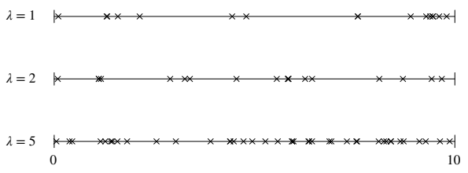
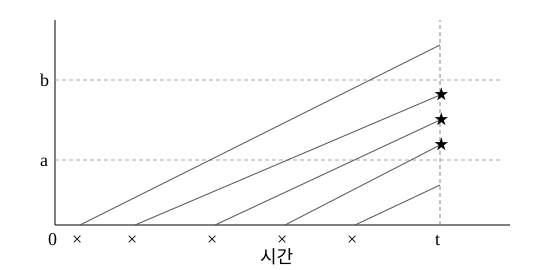
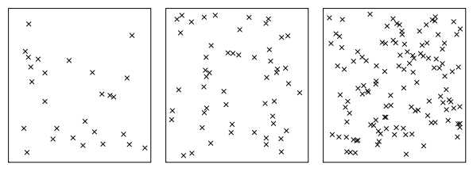
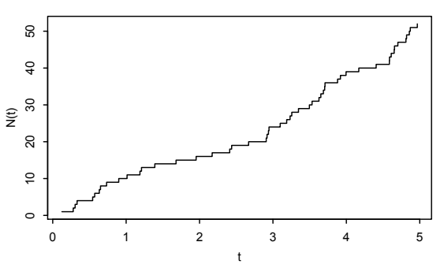

13 포아송 과정
포아송 과정은 시간이나 공간에서 발생하는 사건을 나타내는 간단한 모형이다. 1차원에서는 고속도로 검문소를 지나가는 자동차, 2차원에서는 초원의 꽃, 3차원에서는 은하의 한 영역에 있는 별을 예로 들 수 있다. 포아송 과정은 시간과 공간에 걸친 더 복잡한 과정을 구성하는 기본 요소이며, 이러한 과정은 공간통계학이라는 통계학 분야의 중심 주제이다.
포아송 과정은 확률론에서도 유용하다. 이름 있는 여러 분포를 서로 연결하고, 그렇지 않으면 증명하기 번거로울 수 있는 결과들에 대해 통찰력 있는 이야기 증명을 제공하기 때문이다. 이는 새로운 문제 해결 전략으로 이어진다. 곧 살펴보겠지만, 문제에서 포아송 과정을 전혀 언급하지 않더라도 확률변수들이 포아송 과정에서 나온 것처럼 생각하여 포아송 과정의 편리한 성질을 활용할 수 있는 경우가 있다.
이 장에서는 이미 익숙한 1차원 포아송 과정의 정의를 복습하고 그 중요한 성질 세 가지를 유도하고 논의한 다음, 이 성질들을 고차원의 포아송 과정으로 확장한다.
13.1 1차원 포아송 과정
5.6절에서 1차원 포아송 과정을 정의하고 도착 사이의 시간 간격이 독립이고 동일한 지수분포를 따름을 보였다. 8장에서는 \(j\)번째 도착 시간(고정된 어떤 시작 시간으로부터 잰 시간)이 감마분포를 따름을 보였다. 고차원으로 일반화하는 데 도움이 되는 표기법을 사용하여 이 결과들을 복습하자.
정의 13.1.1 (1차원 포아송 과정). 연속시간에서 일어나는 도착의 수열이 다음 조건들을 만족하면 발생률이 \(\lambda\)인 포아송 과정이다.
- 길이가 \(t\)인 구간에서 도착한 횟수는 \(\operatorname{Pois}(\lambda t)\) 분포를 따른다.
- 서로 겹치지 않는 시간 구간들에서의 도착 횟수는 서로 독립이다.
옮긴이 주: 아래 지수분포와 도착 시간의 설명에서는 \(\lambda>0\)을 가정한다.
보통 시간축이 \(t=0\)에서 시작한다고 가정하며, 이 경우 \((0,\infty)\) 위의 포아송 과정을 얻는다. 그러나 시간축이 양방향으로 무한하기를 원한다면 같은 조건을 사용하여 \((-\infty,\infty)\) 위의 포아송 과정을 정의할 수 있다.
\((0,\infty)\) 위의 포아송 과정을 생각하자. 앞 장들의 표기와 약간 다르게 \(N(t)\)를 \((0,t]\)에서의 도착 횟수라 하자. 그러면 \(0<t_1<t_2\)에 대해 \((t_1,t_2]\)에서의 도착 횟수는 \(N(t_2)-N(t_1)\)이다. \(T_j\)를 \(j\)번째 도착 시간이라 하자. 5.6절에서 논의한 횟수-시간 쌍대성에 의해 \(T_1>t\)는 \(N(t)=0\)과 같은 사건이므로
\[P(T_1>t)=P(N(t)=0)=e^{-\lambda t}.\]
옮긴이 주: 이 식에서 \(t\geq0\)이며, 아래 도착 간격 표기에서는 \(T_0=0\)으로 둔다.
따라서 \(T_1\sim\operatorname{Expo}(\lambda)\)이다. 다음으로 첫 도착 시간 \(T_1\)을 조건으로 삼고 두 번째 도착까지 추가로 걸리는 시간 \(T_2-T_1\)을 살펴보자. \(T_1\)에서 새로운 포아송 과정이 시작되므로 위와 같은 논증에 의해
\[(T_2-T_1)\mid T_1\sim\operatorname{Expo}(\lambda).\]
\((T_2-T_1)\mid T_1\)의 조건부분포는 \(T_1\)에 의존하지 않으므로 \(T_2-T_1\)은 \(T_1\)과 독립이며, 따라서 조건을 붙이지 않아도 \(T_2-T_1\sim\operatorname{Expo}(\lambda)\)이다.
이런 식으로 계속하면 도착 간격 \(T_j-T_{j-1}\)은 서로 독립이며
\[T_j-T_{j-1}\sim\operatorname{Expo}(\lambda)\]
이다. 따라서 포아송 과정은 도착 횟수가 포아송분포를 따르는 과정으로도, 도착 간격이 지수분포를 따르는 과정으로도 이중적으로 기술할 수 있다. 또한 \(T_j\)는 독립이고 동일한 \(\operatorname{Expo}(\lambda)\) 분포를 따르는 확률변수 \(j\)개의 합이므로
\[T_j\sim\operatorname{Gamma}(j,\lambda)\]
이다.
지수분포와의 연결은 포아송 과정에서 \(n\)번의 도착을 생성하는 간단한 방법을 제공한다.
이야기 13.1.2 (1차원 포아송 과정의 생성 이야기). \((0,\infty)\) 위에서 발생률이 \(\lambda\)인 포아송 과정의 도착 \(n\)개를 생성하려면 다음과 같이 한다.
- 독립이고 동일한 \(\operatorname{Expo}(\lambda)\) 분포를 따르는 확률변수 \(X_1,\ldots,X_n\)을 생성한다.
- \(j=1,\ldots,n\)에 대해 \(T_j=X_1+\cdots+X_j\)로 둔다.
그러면 \(T_1,\ldots,T_n\)을 도착 시간으로 삼을 수 있다. \(\square\)
그림 13.1은 각각 발생률이 1, 2, 5인 포아송 과정의 세 실현을 시간 10까지 그린 것이다. 세 경우 모두 도착 간격이 독립이고 동일한 분포를 따르는데도 도착들이 균등한 간격으로 일어나지 않음을 볼 수 있다. 오히려 도착 간격의 변동이 커서 도착들이 무리를 이룬다. 이 현상을 포아송 뭉침(Poisson clumping)이라고 한다. 여러 도착이 시간상 가깝게 모인 것을 보면 놀라운 우연처럼 보일 수 있지만, 포아송 뭉침에 따르면 포아송 과정에서 이런 무리는 흔하다.

13.2 조건부여, 중첩, 솎아내기
포아송 과정에서 이해해야 할 가장 중요한 세 성질은 조건부여, 중첩, 솎아내기이다. 이들은 포아송분포에서 이미 보았던 성질에 대응하므로 충분히 그럴듯하게 느껴질 것이다.
13.2.1 조건부여
포아송 과정에서 구간 안의 사건의 총개수를 조건으로 두면 어떻게 될까? 첫 번째 결과는 구간 안의 사건의 총개수가 주어졌을 때 고정된 부분구간 안의 사건 수가 이항분포를 따른다는 것이다. 이는 정리 4.8.2에서 포아송분포에 조건을 부여하면 이항분포를 얻을 수 있음을 보인 결과에서 따른다.
정리 13.2.1 (조건부 개수). \((N(t):t>0)\)를 발생률 \(\lambda\)인 포아송 과정이라 하고 \(t_1<t_2\)라 하자. \(N(t_2)=n\)이 주어졌을 때 \(N(t_1)\)의 조건부분포는
\[N(t_1)\mid N(t_2)=n\sim\operatorname{Bin}\left(n,\frac{t_1}{t_2}\right)\]
이다.
증명. 그림 13.2는 상황을 보여 준다. 주장하는 바는 \((0,t_2]\)에서 총 \(n\)번의 도착이 있었다는 조건 아래 \((0,t_1]\)의 도착 횟수는 시행 횟수 \(n\), 성공확률이 \(t_1\)에 비례하는 이항분포를 따른다는 것이다.
![그림 13.2: 조건부여. (0, t₂]에 n번 도착했다는 조건 아래 (0, t₁]의 도착 횟수의 조건부분포는 모수가 n, t₁/t₂인 이항분포이다.](figures/fig-13-2.svg)
\((0,t_1]\)과 \((t_1,t_2]\)는 서로 겹치지 않으므로 \(N(t_1)\)과 \(N(t_2)-N(t_1)\)은 독립이다. 첫 번째는 \(\operatorname{Pois}(\lambda t_1)\), 두 번째는 \(\operatorname{Pois}(\lambda(t_2-t_1))\) 분포를 따르며, 이들의 합은 \((0,t_2]\)의 도착 횟수인 \(N(t_2)\)이다. 정리 4.8.2에 의해
\[N(t_1)\mid N(t_2)=n\sim\operatorname{Bin}\left(n,\frac{\lambda t_1}{\lambda t_1+\lambda(t_2-t_1)}\right),\]
이는 바로 보이려고 했던 결과이다. \(\blacksquare\)
도착 횟수에 조건을 부여하는 아이디어를 더 발전시키면 다음과 같은 놀라운 결과를 얻는다. 포아송 과정에서 \(N(t)=n\)이 주어졌을 때 도착 시각들은 마치 독립이고 동일한 \(\operatorname{Unif}(0,t)\) 점 \(n\)개를 던져 놓은 것처럼 분포한다.
먼저 도착이 한 번만 있었던 간단한 경우를 살펴보자.
명제 13.2.2. 발생률이 \(\lambda\)인 포아송 과정에서 \(N(t)=1\)이라는 조건 아래 첫 도착 시각 \(T_1\)은 \(\operatorname{Unif}(0,t)\) 분포를 따른다.
증명. \(0<s<t\)라 하자. 개수-시간 쌍대성의 한 형태에 의해
\[ \begin{aligned} P(T_1\leq s\mid N(t)=1) &=\frac{P(T_1\leq s,N(t)=1)}{P(N(t)=1)}\\ &=\frac{P(N(s)=1,N(t)-N(s)=0)}{P(N(t)=1)}\\ &=\frac{(e^{-\lambda s}\lambda s)(e^{-\lambda(t-s)})}{e^{-\lambda t}\lambda t}=\frac{s}{t}. \end{aligned} \]
따라서 \(N(t)=1\)이 주어졌을 때 \(T_1\)의 조건부 누적분포함수는 \(\operatorname{Unif}(0,t)\)의 누적분포함수이다. \(\blacksquare\)
더 일반적으로 \(N(t)=n\)이 주어졌을 때 도착 시각 \(T_j\)들은 독립이고 동일한 \(\operatorname{Unif}(0,t)\) 확률변수 \(n\)개의 순서통계량과 같다. 8장에서 순서통계량을 소개할 때 주변분포에 초점을 맞추었으므로 증명은 생략한다.
정리 13.2.3 (조건부 시각). 발생률이 \(\lambda\)인 포아송 과정에서 \(N(t)=n\)이라는 조건 아래 도착 시각 \(T_1,\ldots,T_n\)의 결합분포는 독립이고 동일한 \(\operatorname{Unif}(0,t)\) 확률변수 \(n\)개의 순서통계량의 결합분포와 같다.
8장에서 \(\operatorname{Unif}(0,1)\) 확률변수의 순서통계량이 베타분포를 따른다는 것을 알았다. 따라서 \(T_j\)의 조건부분포는 척도 변환된 베타분포이다. 베타분포를 얻으려면 \(T_j\)를 \(t\)로 나누어 지지집합이 \((0,1)\)이 되게 하면 된다.
\[t^{-1}T_j\mid N(t)=n\sim\operatorname{Beta}(j,n-j+1).\]
이제 포아송 과정의 도착을 생성하는 또 다른 방법을 얻었다. 이번에는 특정 횟수의 도착이 아니라 특정 구간에 대한 방법이다.
이야기 13.2.4 (포아송 과정의 생성 이야기, 두 번째 방법). 구간 \((0,t]\)에서 발생률이 \(\lambda\)인 포아송 과정의 도착을 생성하려면 다음과 같이 한다.
- 구간 안의 총 사건 수 \(N(t)\sim\operatorname{Pois}(\lambda t)\)를 생성한다.
- \(N(t)=n\)이 주어졌을 때 독립이고 동일한 \(\operatorname{Unif}(0,t)\) 확률변수 \(U_1,\ldots,U_n\)을 생성한다.
- \(j=1,\ldots,n\)에 대해 \(T_j=U_{(j)}\)로 놓는다. \(\square\)
실제로 그림 13.1을 만들 때도 이 생성 이야기를 사용했다. 구간 \((0,10]\)에서 모의실험하려는 것을 알고 있었기 때문이다.
예제 13.2.5 (웹사이트의 사용자). 사용자들이 발생률이 분당 \(\lambda_1\)명인 포아송 과정에 따라 어떤 웹사이트를 방문한다. 특정 시각의 ‘도착’은 그 시각에 누군가 사이트를 둘러보기 시작한다는 뜻이다. 각 사용자는 도착 후 다른 사용자와 독립적으로 \(\operatorname{Expo}(\lambda_2)\) 분포를 따르는 시간 동안 사이트를 둘러본 다음 떠난다.
옮긴이 주: 체류시간들은 도착 시각 과정과도 독립이라고 가정한다.
시각 0에는 사이트 이용자가 없다고 하자. \(N_t\)를 구간 \((0,t]\)에 도착한 사용자 수, \(C_t\)를 시각 \(t\)에 현재 사이트를 둘러보는 사용자 수라 하자.
\([0,t]\)에서 균등하게 선택된 시각에 도착한 한 사용자의 도착 시각을 \(X\), 이탈 시각을 \(Y\)라 하자. \(X,Y\)의 결합확률밀도함수를 구하라.
\((0,t]\)에서 균등하게 선택된 시각에 도착한 한 사용자가 시각 \(t\)에도 사이트를 둘러보고 있을 확률을 \(p_t\)라 하자. \(p_t\)를 구하라.
\(C_t\)의 분포를 \(\lambda_1,\lambda_2,t\)로 나타내어 구하라.
리틀의 법칙은 다음과 같은 매우 일반적인 결과이다. 안정된 시스템의 장기 평균 고객 수는 장기 평균 도착률에 고객이 시스템에서 보내는 평균 시간을 곱한 것이다. \(t\)가 클 때 \(E(C_t)\)가 어떻게 되는지, 리틀의 법칙에 비추어 어떻게 해석할 수 있는지 설명하라.
풀이. (a) \(X\sim\operatorname{Unif}(0,t)\)이다. \(X=x\)가 주어졌을 때 \(Y\)는 \(x\)에서 시작하도록 이동시킨 \(\operatorname{Expo}(\lambda_2)\) 분포이다. 즉 \((Y-x)\mid(X=x)\sim\operatorname{Expo}(\lambda_2)\)이다. 따라서 \(X,Y\)의 결합확률밀도함수는
\[f(x,y)=f_X(x)f_{Y\mid X}(y\mid x)=\frac{\lambda_2}{t}e^{-\lambda_2(y-x)},\qquad 0<x<t,\quad x<y.\]
- (a)의 표기에서 구하려는 값은 \(p_t=P(Y>t)\)이다. \(y>t\)인 모든 \((x,y)\)에 대해 결합확률밀도함수를 적분하면 된다.
\[ \begin{aligned} P(Y>t)&=\frac1t\int_0^t\int_t^\infty\lambda_2e^{-\lambda_2(y-x)}\,dy\,dx\\ &=\frac1t\int_0^t e^{\lambda_2x}\left(\int_t^\infty\lambda_2e^{-\lambda_2y}\,dy\right)dx\\ &=\frac{e^{-\lambda_2t}}t\int_0^t e^{\lambda_2x}\,dx =\frac{1-e^{-\lambda_2t}}{\lambda_2t}. \end{aligned} \]
- 정리 13.2.3에 의해 \(N_t=n\)이 주어지면 \((0,t]\)의 \(n\)개 도착 시각은 그 구간에서 독립이고 동일한 균등분포의 표본으로 볼 수 있다. 따라서 위의 \(p_t\)에 대해 \(C_t\mid N_t\sim\operatorname{Bin}(N_t,p_t)\)이고 \(N_t\sim\operatorname{Pois}(\lambda_1t)\)이다. 그러므로 닭과 달걀 이야기(이야기 7.1.9)에 의해
옮긴이 주: 시간순으로 나열된 도착 시각은 독립 균등표본의 순서통계량이다. 순서를 무시하고 재배정하면 독립 균등표본으로 볼 수 있다.
\[C_t\sim\operatorname{Pois}(\lambda_1p_tt)=\operatorname{Pois}\left(\frac{\lambda_1(1-e^{-\lambda_2t})}{\lambda_2}\right).\]
- \(t\to\infty\)일 때 \(E(C_t)\to\lambda_1/\lambda_2\)이다. 이는 리틀의 법칙과 일치한다. 시스템에 있는 사용자, 즉 사이트를 둘러보는 사용자의 장기 평균 수가 사용자의 발생률 \(\lambda_1\)에 한 번 방문한 사용자가 사이트를 둘러보는 평균 시간 \(1/\lambda_2\)을 곱한 값이기 때문이다. \(\square\)
13.2.2 중첩
다음으로 살펴볼 성질은 중첩이다. 독립인 두 포아송 과정을 겹치면 또 다른 포아송 과정을 얻는다. 합쳐진 과정 자체가 포아송 과정이지만, 각 도착에 원래 어떤 과정에서 왔는지 표시가 붙어 있다고 생각할 수 있다.
정리 13.2.6 (중첩). \((N_1(t):t>0)\)과 \((N_2(t):t>0)\)를 각각 발생률이 \(\lambda_1,\lambda_2\)인 독립 포아송 과정이라 하자. 그러면 합쳐진 과정 \(N(t)=N_1(t)+N_2(t)\)는 발생률 \(\lambda_1+\lambda_2\)인 포아송 과정이다.
증명. 포아송 과정의 정의에 있는 두 성질을 확인하자.
- 모든 \(t>0\)에 대해 \(N_1(t)\sim\operatorname{Pois}(\lambda_1t)\), \(N_2(t)\sim\operatorname{Pois}(\lambda_2t)\)이고 둘은 독립이다. 따라서 정리 4.8.1에 의해 \(N(t)\sim\operatorname{Pois}((\lambda_1+\lambda_2)t)\)이다. 동일한 논증은 \((0,t]\) 형태의 구간뿐 아니라 길이가 \(t\)인 임의의 구간에 적용된다.
- 서로 겹치지 않는 구간들의 도착은 합쳐진 과정에서도 독립이다. 각각의 과정에서 독립이며, 두 개별 과정도 서로 독립이기 때문이다. \(\blacksquare\)
중첩을 생성하는 아주 자연스러운 방법이 있다.
이야기 13.2.7 (중첩의 생성 이야기). 각각 발생률이 \(\lambda_1,\lambda_2\)인 독립 포아송 과정 \((N_1(t):t>0)\)과 \((N_2(t):t>0)\)의 중첩을 생성하려면 다음과 같이 한다.
- 포아송 과정 \((N_1(t):t>0)\)의 도착들을 생성한다.
- 포아송 과정 \((N_2(t):t>0)\)의 도착들을 생성한다.
- 1단계와 2단계의 결과를 중첩한다. \(\square\)
그림 13.3은 \(\times\)와 \(\bullet\)로 이루어진 중첩 포아송 과정을 나타낸다. \(\times\)를 ‘유형 1 사건’, \(\bullet\)를 ‘유형 2 사건’이라고 하자. 자연스럽게 다음 질문이 생긴다. 유형 2 사건보다 유형 1 사건을 먼저 관측할 확률은 얼마인가?
그림 13.3: 중첩. 독립 포아송 과정의 중첩은 포아송 과정이며 발생률은 더해진다. 위의 두 시간선은 각각 발생률이 0.5인 독립 포아송 과정이고, 아래 시간선은 이 둘의 중첩으로 발생률이 1인 포아송 과정이다.
\[\begin{array}{r|l} \lambda_1=0.5&\times\quad\times\qquad\times\quad\times\\ \lambda_2=0.5&\quad\bullet\quad\bullet\qquad\bullet\quad\bullet\\ \lambda_1+\lambda_2=1&\times\quad\bullet\quad\times\quad\bullet\quad\times\quad\bullet\quad\times\quad\bullet \end{array}\]
정리 13.2.8 (유형 2 사건보다 유형 1 사건이 먼저 일어날 확률). 독립인 두 포아송 과정, 즉 발생률 \(\lambda_1\)인 유형 1 도착 과정과 발생률 \(\lambda_2\)인 유형 2 도착 과정을 생각하자. 두 과정의 중첩에서 첫 도착이 유형 1일 확률은 \(\lambda_1/(\lambda_1+\lambda_2)\)이다.
증명. 첫 유형 1 사건까지의 시간을 \(T\), 첫 유형 2 사건까지의 시간을 \(V\)라 하자. 구하려는 값은 \(P(T\leq V)\)이다. 2차원 LOTUS를 사용하여 \(T,V\)의 결합확률밀도함수를 2차원 평면의 관심 영역에서 적분할 수도 있지만, 미적분을 아예 피할 수 있다.
\(T\sim\operatorname{Expo}(\lambda_1)\), \(V\sim\operatorname{Expo}(\lambda_2)\)이고 둘은 독립이다. 척도를 바꾸어 \(\widetilde T=\lambda_1T\), \(\widetilde V=\lambda_2V\)로 놓자. 그러면 \(\widetilde T,\widetilde V\)는 독립이고 동일한 \(\operatorname{Expo}(1)\) 분포를 따른다. \(U=\widetilde T/(\widetilde T+\widetilde V)\)라 놓으면
\[ \begin{aligned} P(T\leq V)&=P\left(\frac{\widetilde T}{\lambda_1}\leq\frac{\widetilde V}{\lambda_2}\right)\\ &=P\left(\frac{\widetilde T}{\widetilde T+\widetilde V}\leq\frac{\widetilde V}{\widetilde T+\widetilde V}\frac{\lambda_1}{\lambda_2}\right)\\ &=P\left(U\leq(1-U)\frac{\lambda_1}{\lambda_2}\right) =P\left(U\leq\frac{\lambda_1}{\lambda_1+\lambda_2}\right). \end{aligned} \]
\(\widetilde T,\widetilde V\sim\operatorname{Expo}(1)\)이므로 은행-우체국 이야기에 의해 \(U\sim\operatorname{Beta}(1,1)\)이다. 즉 \(U\)는 표준균등분포를 따른다! 따라서 \(P(T\leq V)=\lambda_1/(\lambda_1+\lambda_2)\)이다. \(\lambda_1=\lambda_2\)일 때 대칭성에서 예상하듯 이 값은 \(1/2\)이 된다. \(\blacksquare\)
위 결과는 합쳐진 포아송 과정의 첫 도착에 적용된다. 그러나 첫 도착 이후에는 같은 논리를 두 번째 도착에 적용할 수 있다. 무기억성에 의해 다음 유형 1 사건까지의 시간은 \(\operatorname{Expo}(\lambda_1)\), 다음 유형 2 사건까지의 시간은 \(\operatorname{Expo}(\lambda_2)\)이며 과거와 독립이다. 따라서 두 번째 도착은 첫 도착과 독립적으로 확률 \(\lambda_1/(\lambda_1+\lambda_2)\)로 유형 1이다. 마찬가지로 모든 도착 유형은 앞면이 유형 1에 해당하고 앞면 확률이 \(\lambda_1/(\lambda_1+\lambda_2)\)인 독립이고 동일한 동전 던지기로 볼 수 있다.
이는 독립인 두 포아송 과정의 중첩을 생성하는 다른 이야기를 제시한다. 먼저 \(\operatorname{Expo}(\lambda_1+\lambda_2)\) 확률변수를 생성하여 다음 도착 시각을 정하고, 독립적으로 앞면 확률이 \(\lambda_1/(\lambda_1+\lambda_2)\)인 동전을 던져 도착 유형을 정한다.
이야기 13.2.9 (중첩의 생성 이야기, 두 번째 방법). 발생률이 각각 \(\lambda_1,\lambda_2\)인 독립 포아송 과정 두 개의 중첩을 생성하려면 다음과 같이 한다.
- 독립이고 동일한 \(\operatorname{Expo}(\lambda_1+\lambda_2)\) 확률변수 \(X_1,X_2,\ldots\)을 생성하고 \(j\)번째 도착 시각을 \(T_j=X_1+\cdots+X_j\)로 놓는다.
- \(X_1,X_2,\ldots\)과 독립이고 서로 독립이며 동일한 분포를 따르는 \(I_1,I_2,\ldots\sim\operatorname{Bern}(\lambda_1/(\lambda_1+\lambda_2))\)를 생성한다. \(I_j=1\)이면 \(j\)번째 도착을 유형 1, 그렇지 않으면 유형 2로 한다. \(\square\)
이 이야기를 이용하면 경쟁 위험 정리라고 알려진 결과를 빠르게 증명할 수 있다. 이 결과만 따로 보면 놀라운 독립성 결과처럼 보이지만 포아송 과정의 맥락에서 보면 매우 직관적이다.
예제 13.2.10 (경쟁 위험). 프레드의 냉장고 수명은 \(Y_1\sim\operatorname{Expo}(\lambda_1)\)이고, 식기세척기 수명은 \(Y_1\)과 독립인 \(Y_2\sim\operatorname{Expo}(\lambda_2)\)이다. 첫 가전제품의 고장 시각인 \(\min(Y_1,Y_2)\)가 냉장고가 먼저 고장 났는지 나타내는 지시확률변수 \(I(Y_1<Y_2)\)와 독립임을 보여라. 이는 놀랍게 느껴질 수 있다. 예를 들어 냉장고의 평균 수명이 15년이고 식기세척기의 평균 수명이 7년인데 가전제품 하나가 7년 후 고장 났다면 식기세척기가 고장 났으리라고 추측하는 것이 자연스러울 것이다. 그러나 실제로는 첫 고장 시각을 알아도 어느 가전제품이 고장 났는지에 관한 정보는 얻지 못함을 보이겠다.
풀이. 이 문제에서는 포아송 과정을 전혀 언급하지 않지만 포아송 과정의 아이디어를 이용하는 끼워 넣기 전략을 사용하겠다! 포아송 과정의 성질을 활용하기 위해 우리가 직접 만들어 낸 포아송 과정에 확률변수 \(Y_1,Y_2\)를 끼워 넣는다. 발생률이 \(\lambda_1\)인 냉장고 고장의 포아송 과정과 발생률이 \(\lambda_2\)인 식기세척기 고장의 포아송 과정이 각각 존재한다고 상상하자.
\(Y_1\)은 냉장고 과정의 첫 도착까지 기다리는 시간으로, \(Y_2\)는 식기세척기 과정의 첫 도착까지 기다리는 시간으로 해석할 수 있다. 이 접근법은 타당하다. \((\min(Y_1,Y_2),I(Y_1<Y_2))\)는 \((Y_1,Y_2)\)의 함수이므로 중요한 것은 \((Y_1,Y_2)\)의 결합분포인데, 우리가 구성한 \((Y_1,Y_2)\)는 올바른 결합분포를 갖기 때문이다.
나아가 \(\min(Y_1,Y_2)\)는 두 포아송 과정을 중첩했을 때 첫 도착까지의 대기시간이고, \(I(Y_1<Y_2)\)는 이 도착이 유형 1 사건인지 나타내는 지시확률변수이다. 그런데 앞의 생성 이야기에서는 중첩 포아송 과정의 도착 시각과 사건 유형을 완전히 독립적으로 생성한다! 따라서 \(\min(Y_1,Y_2)\)와 \(I(Y_1<Y_2)\)는 독립이며
\[\min(Y_1,Y_2)\sim\operatorname{Expo}(\lambda_1+\lambda_2),\qquad I(Y_1<Y_2)\sim\operatorname{Bern}\left(\frac{\lambda_1}{\lambda_1+\lambda_2}\right).\qquad\square\]
이야기 13.2.9의 직접적인 결과로, 중첩 포아송 과정을 이산시간에 투영하여 유형 1과 유형 2의 도착 순서만 남기고 도착 시각 자체는 버리면 독립이고 동일한 \(\operatorname{Bern}(\lambda_1/(\lambda_1+\lambda_2))\) 확률변수 \(I_1,I_2,\ldots\)이 남는다. 여기서 \(I_j\)는 \(j\)번째 도착이 유형 1인지 나타내는 지시확률변수이다. 그림 13.4는 포아송 과정에서 연속시간 정보를 제거한다는 것이 무엇인지 보여 주며, 정리 13.2.11은 이 결과를 형식적으로 서술한다.
그림 13.4: 이산시간으로의 투영. 중첩 포아송 과정에서 연속시간 정보를 제거하면 유형 1과 유형 2 사건을 구분하는 독립이고 동일한 분포의 지시확률변수 수열을 얻는다. \(\times\)는 유형 1 사건, \(\bullet\)는 유형 2 사건을 나타낸다.
\[\underset{\text{연속시간의 도착}}{\times\quad\bullet\qquad\times\;\bullet\qquad\bullet\quad\times}\quad\longrightarrow\quad\underset{\text{유형의 순서}}{\times\;\bullet\;\times\;\bullet\;\bullet\;\times\;\cdots}\]
정리 13.2.11 (중첩을 이산시간으로 투영). 발생률이 각각 \(\lambda_1,\lambda_2\)인 독립 포아송 과정 두 개의 중첩 \((N(t):t>0)\)을 생각하자. \(j=1,2,\ldots\)에 대해 \(I_j\)를 \(j\)번째 사건이 발생률 \(\lambda_1\)인 포아송 과정에서 왔는지 나타내는 지시확률변수라 하자. 그러면 \(I_j\)들은 독립이고 동일한 \(\operatorname{Bern}(\lambda_1/(\lambda_1+\lambda_2))\) 분포를 따른다.
이 결과를 이용하면 포아송분포의 감마 혼합이 음이항분포라는 사실을 이야기로 증명할 수 있다. 이 사실은 블로치빌에서의 프레드의 모험(이야기 8.4.5)에서 처음 배웠다. 먼저 특수한 경우를 살펴보자.
정리 13.2.12 (포아송분포의 지수 혼합은 기하분포이다). \(X\sim\operatorname{Expo}(\lambda)\)이고 \(Y\mid X=x\sim\operatorname{Pois}(x)\)라고 하자. 그러면 \(Y\sim\operatorname{Geom}(\lambda/(\lambda+1))\)이다.
증명. 경쟁 위험 정리에서처럼 \(X,Y\)를 포아송 과정에 끼워 넣는다. 독립인 두 포아송 과정, 즉 발생률 1로 실패가 도착하는 과정과 발생률 \(\lambda\)로 성공이 도착하는 과정을 생각하자. \(X\)를 첫 성공 시각으로 놓으면 \(X\sim\operatorname{Expo}(\lambda)\)이다. \(Y\)를 첫 성공 시각 이전의 실패 횟수라 하자. 발생률 1인 포아송 과정의 정의에 따라 \(Y\mid X=x\sim\operatorname{Pois}(x)\)이다. 따라서 \(X,Y\)는 정리의 조건을 만족한다.
\(Y\)의 주변분포를 구하려면 연속시간 정보를 제거하자! 이산시간에서는 성공확률이 \(\lambda/(\lambda+1)\)인 독립이고 동일한 베르누이 시행들이 있고, \(Y\)는 첫 성공 전의 실패 횟수로 정의되었다. 따라서 기하분포의 이야기에 의해 \(Y\sim\operatorname{Geom}(\lambda/(\lambda+1))\)이다. \(\blacksquare\)
일반적인 경우의 논리도 비슷하다.
정리 13.2.13 (포아송분포의 감마 혼합은 음이항분포이다). \(X\sim\operatorname{Gamma}(r,\lambda)\)이고 \(Y\mid X=x\sim\operatorname{Pois}(x)\)라고 하자. 그러면 \(Y\sim\operatorname{NBin}(r,\lambda/(\lambda+1))\)이다.
옮긴이 주: 아래의 \(r\)번째 성공을 이용한 증명은 \(r\)이 양의 정수인 경우에 적용된다. 음이항분포를 양의 실수 \(r\)로 확장하면 결과도 성립하지만 별도 증명이 필요하다.
증명. 독립인 두 포아송 과정, 즉 발생률 1로 실패가 도착하는 과정과 발생률 \(\lambda\)로 성공이 도착하는 과정을 생각하자. \(X\)를 \(r\)번째 성공 시각으로 놓으면 \(X\sim\operatorname{Gamma}(r,\lambda)\)이다. \(Y\)를 \(r\)번째 성공 시각 이전의 실패 횟수라 하자. 그러면 포아송 과정의 정의에 따라 \(Y\mid X=x\sim\operatorname{Pois}(x)\)이다. \(Y\)는 성공확률이 \(\lambda/(\lambda+1)\)인 독립이고 동일한 베르누이 시행의 수열에서 \(r\)번째 성공 이전의 실패 횟수이므로 \(Y\sim\operatorname{NBin}(r,\lambda/(\lambda+1))\)이다. \(\blacksquare\)
13.2.3 솎아내기
마지막으로 논의할 포아송 과정의 성질은 솎아내기이다. 포아송 과정의 각 도착에 대해 독립적으로 동전을 던져 유형 1 사건인지 유형 2 사건인지 결정하면 독립인 두 포아송 과정을 얻는다.
정리 13.2.14 (솎아내기). \((N(t):t>0)\)를 발생률 \(\lambda\)인 포아송 과정이라 하고 각 도착을 확률 \(p\)로 유형 1 사건, 확률 \(1-p\)로 유형 2 사건으로 분류하자. 이러한 분류는 서로 독립이고 도착 시각들과도 독립이다. 그러면 유형 1 사건들은 발생률 \(\lambda p\)인 포아송 과정을, 유형 2 사건들은 발생률 \(\lambda(1-p)\)인 포아송 과정을 이루며, 두 과정은 독립이다.
증명. \(\lambda_1=\lambda p\), \(\lambda_2=\lambda(1-p)\)로 놓으면 \(\lambda=\lambda_1+\lambda_2\), \(p=\lambda_1/(\lambda_1+\lambda_2)\)이다. 그러면 이야기 13.2.9의 상황이 된다. 그런데 이야기 13.2.7과 이야기 13.2.9는 중첩에 대한 두 동등한 생성 이야기이다! 이야기 13.2.7에서 \((N_i(t):t>0)\)의 도착들을 유형 \(i\)로 생각하면 두 이야기에서 생성된 결과의 확률구조는 같다. 따라서 대신 이야기 13.2.7로 과정을 생성했다고 가정해도 된다. 다행히 이 이야기에서는 처음부터 유형 1 과정이 유형 2 과정과 독립임을 안다. \(\blacksquare\)
따라서 독립 포아송 과정들을 중첩하여 하나의 포아송 과정을 얻을 수도 있고, 하나의 포아송 과정을 독립 포아송 과정들로 나눌 수도 있다. 그림 13.5는 솎아내기를 보여 준다. 그림 13.3을 단순히 거꾸로 뒤집은 것인데, 솎아내기는 중첩의 뒤집힌 모습이므로 적절하다!
그림 13.5: 솎아내기. 하나의 포아송 과정에서 출발하여 각 도착을 확률 \(p\)로 유형 1, 확률 \(1-p\)로 유형 2로 정하면 발생률이 각각 \(\lambda p\), \(\lambda(1-p)\)인 독립 포아송 과정 두 개를 얻는다. \(\times\)는 유형 1, \(\bullet\)는 유형 2를 나타내며 여기서는 \(p=0.5\)이다.
\[\begin{array}{r|l} \lambda=1&\times\quad\bullet\quad\times\quad\bullet\quad\times\quad\bullet\quad\times\quad\bullet\\ \lambda p=0.5&\times\qquad\times\qquad\times\qquad\times\\ \lambda(1-p)=0.5&\quad\bullet\qquad\bullet\qquad\bullet\qquad\bullet \end{array}\]
솎아내기는 닭과 달걀 이야기에 대응하는 포아송 과정의 성질이다. 정리 13.2.14와 같이 발생률이 \(\lambda\)인 포아송 과정 \((N(t):t>0)\)을 솎아내고 \((N_i(t):t>0)\)를 유형 \(i\) 도착의 과정이라 하자. 유형 1 도착을 부화하는 달걀이라고 생각하면 닭과 달걀 이야기에서 즉시 \(N_1(t)\sim\operatorname{Pois}(\lambda pt)\), \(N_2(t)\sim\operatorname{Pois}(\lambda(1-p)t)\)이고 \(N_1(t)\)과 \(N_2(t)\)가 독립임을 얻는다.
연습 삼아, 그리고 솎아내기의 우아함을 보여 주는 예로서, 확률합의 분포를 두 가지 방법으로 구하자. 첫째는 MGF와 조건부 기댓값을, 둘째는 솎아내기를 사용한다.
예제 13.2.15 (첫 성공 횟수만큼의 지수 확률변수의 합). \(X_1,X_2,\ldots\)이 독립이고 동일한 \(\operatorname{Expo}(\lambda)\) 분포를 따르며, \(N\sim\operatorname{FS}(p)\)는 \(X_j\)들과 독립이라고 하자. 확률합
\[Y=\sum_{j=1}^N X_j\]
의 분포를 구하라.
풀이. 이 문제를 두 번 풀겠다. 먼저 9장의 도구를 사용하고, 다음으로 솎아내기를 이용하는 포아송 과정 이야기를 사용한다. 첫 번째 방법에서는 \(Y\)를 확률변수의 확률적인 개수만큼의 합으로 보고 \(N\)을 조건으로 하는 아담의 법칙을 이용하여 \(Y\)의 MGF를 구한다. \(\operatorname{Expo}(\lambda)\)의 MGF는 \(t<\lambda\)에 대해 \(\lambda/(\lambda-t)\)임을 떠올리면
\[ \begin{aligned} E(e^{tY})&=E\left(E\left(e^{t\sum_{j=1}^NX_j}\mid N\right)\right)\\ &=E\left(E(e^{tX_1})E(e^{tX_2})\cdots E(e^{tX_N})\mid N\right)\\ &=E\left(E(e^{tX_1})^N\right) =E\left(\left(\frac{\lambda}{\lambda-t}\right)^N\right). \end{aligned} \]
이제 \(k=1,2,\ldots\)에 대해 \(P(N=k)=q^{k-1}p\)인 \(\operatorname{FS}(p)\)의 확률질량함수에 LOTUS를 적용할 수 있다. LOTUS의 합은
\[E\left(\left(\frac{\lambda}{\lambda-t}\right)^N\right)=\sum_{k=1}^\infty\left(\frac{\lambda}{\lambda-t}\right)^kq^{k-1}p\]
이며, 대수적으로 정리하고 등비급수를 합하면 \(t<\lambda p\)에 대해 \(\lambda p/(\lambda p-t)\)가 된다. 이는 \(\operatorname{Expo}(\lambda p)\)의 MGF이므로 \(Y\sim\operatorname{Expo}(\lambda p)\)이다.
이제 포아송 과정을 이용하면 대수 계산을 피하면서 동시에 \(Y\)가 왜 지수분포를 따르는지 통찰을 얻을 수 있음을 보자. 끼워 넣기 전략을 이용하면, \(X_j\)들이 독립이고 동일한 \(\operatorname{Expo}(\lambda)\) 분포를 따르므로 이들을 발생률 \(\lambda\)인 포아송 과정의 도착 간격으로 해석할 수 있다. 그러한 포아송 과정을 상상하고, 나아가 각 도착이 독립적으로 확률 \(p\)로 특별한 도착이라고 하자. 그러면 \(N\)은 첫 특별한 도착까지의 도착 횟수, \(Y\)는 첫 특별한 도착까지의 대기시간으로 해석할 수 있다. 솎아내기 성질에 의해 특별한 도착들은 발생률 \(\lambda p\)인 포아송 과정을 이룬다. 따라서 첫 특별한 도착까지의 대기시간은 \(\operatorname{Expo}(\lambda p)\) 분포를 따른다. \(\square\)
솎아내기는 유형이 2개보다 많아도 비슷하게 작동한다. 이 상황에서 솎아내기는 색칠 정리라고 불리기도 한다.
정리 13.2.16 (색칠). \((N(t):t>0)\)를 발생률 \(\lambda\)인 포아송 과정이라 하고 \(C\)를 1부터 \(c\)까지 번호를 붙인 유한한 ‘색’의 집합이라 하자. 각 도착에 \(C\)의 색을 무작위로 배정하며 색 \(i\)가 배정될 확률은 \(p_i\)라고 하자. 색의 배정은 서로 독립이고 도착 시각들과도 독립이다. \((N_i(t):t>0)\)를 색 \(i\)의 과정, 즉 \(N_i(t)\)가 \((0,t]\)에서 색 \(i\)를 가진 도착의 수인 과정이라 하자. 그러면 \(i=1,2,\ldots,c\)에 대해 \((N_i(t):t>0)\)는 발생률 \(\lambda p_i\)인 포아송 과정이며, 이 \(c\)개의 단색 과정은 서로 독립이다.
증명. \(c\)에 대한 귀납법을 사용한다. \(c=1\)이면 보일 것이 없다. \(c=2\)이면 이미 증명한 솎아내기 정리이다. 이제 이 결과가 색 \(c\)개에 대해 성립한다고 가정하고 \(c+1\)개일 때 보이자. 색 1을 초록색이라고 하자. 솎아내기를 이용하여 각 도착을 확률 \(p_1\)로 초록색에, 확률 \(1-p_1\)로 초록색이 아닌 색에 배정한다. 그러면 포아송 과정이 발생률 \(\lambda p_1\)인 초록색 과정과 발생률 \(\lambda(1-p_1)\)인 비초록색 과정이라는 두 독립적인 과정으로 나뉜다. 귀납가정에 따라 비초록색 과정을 색 \(2,3,\ldots,c+1\) 각각에 해당하는 \(c\)개의 독립 과정으로 다시 나눌 수 있다. 이때 \(j=2,3,\ldots,c+1\)에 대해 색 \(j\)의 확률은
옮긴이 주: \(p_1=1\)이면 나머지 색의 과정은 모두 빈 과정이므로 결론이 자명하다. 아래 분수는 \(p_1<1\)인 경우에 쓴다.
\[\widetilde p_j=\frac{p_j}{1-p_1}=\frac{p_j}{p_2+p_3+\cdots+p_{c+1}}\]
이다. 그러면 각 색에 하나씩 총 \(c+1\)개의 독립 포아송 과정이 생기며, \(j=1,2,\ldots,c+1\)에 대해 색 \(j\)의 과정의 발생률은 \(\lambda p_j\)이다. \(\blacksquare\)
다음 예제는 복잡한 포아송 과정을 다루기 쉬운 구성요소로 나누는 데 색칠이 어떻게 도움이 되는지 보여 준다.
예제 13.2.17 (고속도로의 자동차). 자동차들이 발생률 \(\lambda\)인 포아송 과정에 따라 공통 진입로에서 일방통행 고속도로에 진입한다고 하자. \(i\)번째 자동차는 속도 \(V_i\)를 갖고 이 속도로 영원히 달린다. 자동차가 다른 자동차를 추월할 때 걸리는 시간은 없다고 한다. \(V_i\)들은 양수 값의 유한집합을 지지집합으로 갖는 독립이고 동일한 분포의 이산확률변수라고 가정한다. 과정은 시각 0에 시작하며 고속도로 진입로의 위치를 0으로 잡는다.
옮긴이 주: 속도 수열은 도착 시각 과정과도 독립이라고 가정한다.
\(0<a<b\)를 만족하는 고속도로의 고정된 두 위치 \(a,b\)에 대해 \(Z_t\)를 시각 \(t\)에 구간 \([a,b]\)에 위치한 자동차의 수라 하자. 예를 들어 미국 중서부를 서쪽에서 동쪽으로 가로지르는 주간 고속도로에서 \(a\)가 캔자스시티, \(b\)가 세인트루이스라면 \(Z_t\)는 시각 \(t\)에 미주리주 안에 있는 고속도로상의 자동차 수가 된다. 그림 13.6은 문제의 상황과 \(Z_t\)의 정의를 보여 준다.
\(t\)가 충분히 커서 가능한 모든 \(V_i\)에 대해 \(t>b/V_i\)라고 가정하자. \(Z_t\)가 평균 \(\lambda(b-a)E(V_i^{-1})\)인 포아송분포를 따름을 보여라.
풀이. \(V_i\)는 유한한 지지집합을 가진 이산확률변수이므로 가능한 속도 \(v_1,\ldots,v_m\)과 그 확률 \(p_1,\ldots,p_m\)을 나열할 수 있다. 이 작업을 하면 고속도로에 진입하는 자동차가 \(m\)가지 유형의 도착이며, 각각 다른 속도에 해당함을 알게 된다. 따라서 전체 포아송 과정을 더 간단한 과정들로 나눌 수 있다. 자동차의 속도에 따라 포아송 과정을 \(m\)가지로 색칠하면 속도 \(v_1\)인 자동차는 발생률 \(\lambda p_1\)의 포아송 과정을, 속도 \(v_2\)인 자동차는 발생률 \(\lambda p_2\)의 포아송 과정을 이루는 식이다.
이 \(m\)개의 개별 포아송 과정 각각에 대해 다음을 물을 수 있다. 그 과정의 자동차가 시각 \(t\)에 \([a,b]\)에 있으려면 어느 시간 구간에 고속도로에 진입해야 할까? 이는 통계학이 아니라 물리학의 문제이다.
\[\text{거리}=\text{속도}\times\text{시간}.\]
따라서 시각 \(s\)에 속도 \(v\)로 고속도로에 진입한 자동차의 시각 \(t\)에서의 위치는 \((t-s)v\)이다. 그러므로 자동차의 위치가 \(a\)와 \(b\) 사이에 있으려면 도착 시각이 \(t-b/v\)와 \(t-a/v\) 사이에 있어야 한다. \(t\)가 충분히 크다는 가정에 의해 \(t-b/v\)가 음수인지 걱정할 필요가 없다. 자동차가 \(t-b/v\)보다 일찍 도착하면 시각 \(t\)에는 이미 \(b\)를 지나갔을 것이고, \(t-a/v\)보다 늦게 도착하면 시각 \(t\)까지 \(a\)에 도달하지 못했을 것이다.

이제 각 개별 포아송 과정에 대한 답을 얻었다. 자동차의 속도가 \(v_j\)인 과정에서 \(t-b/v_j\)와 \(t-a/v_j\) 사이에 도착하는 자동차의 수를 \(Z_{tj}\)라 하면 \(Z_{tj}\sim\operatorname{Pois}(\lambda p_j(b-a)/v_j)\)이다. 과정의 발생률은 \(\lambda p_j\)이고 구간 \([t-b/v_j,t-a/v_j]\)의 길이는 \((b-a)/v_j\)이기 때문이다.
개별 과정들이 독립이므로 \(Z_{t1},\ldots,Z_{tm}\)은 독립 포아송 확률변수이다. 따라서
\[Z_t=Z_{t1}+\cdots+Z_{tm}\sim\operatorname{Pois}\left(\lambda(b-a)\sum_{j=1}^m\frac{p_j}{v_j}\right),\]
LOTUS에 의해 \(\sum_{j=1}^m p_j/v_j\)는 \(V_i^{-1}\)의 기댓값이다. 이것이 원하던 결과이다. \(\square\)
이 절을 마무리하면서 포아송 과정의 성질과 포아송분포의 성질 사이의 대응 관계를 다음 표에 정리한다. 두 번째 열에서 \(Y_1\sim\operatorname{Pois}(\lambda_1)\)과 \(Y_2\sim\operatorname{Pois}(\lambda_2)\)는 독립이다.
| 포아송 과정 | 포아송분포 |
|---|---|
| 조건부여 | \(Y_1\mid Y_1+Y_2=n\sim\operatorname{Bin}(n,\lambda_1/(\lambda_1+\lambda_2))\) |
| 중첩 | \(Y_1+Y_2\sim\operatorname{Pois}(\lambda_1+\lambda_2)\) |
| 솎아내기 | 닭과 달걀 이야기 |
13.3 다차원 포아송 과정
다차원 포아송 과정은 1차원 포아송 과정과 비슷하게 정의한다. 길이의 개념을 넓이나 부피의 개념으로 바꾸기만 하면 된다. 구체적으로 이제 2차원 포아송 과정을 정의하겠다. 그러고 나면 유추를 통해 더 높은 차원의 포아송 과정을 어떻게 정의할지도 분명해질 것이다.
정의 13.3.1 (2차원 포아송 과정). 평면 \(\mathbb R^2\)에서 발생하는 사건들이 다음 조건을 만족하면 강도 \(\lambda\)인 2차원 포아송 과정이다.
- 영역 \(A\)에서 발생하는 사건의 수는 \(\operatorname{Pois}(\lambda\cdot\operatorname{area}(A))\) 분포를 따른다.
- 서로 겹치지 않는 영역들에서 발생하는 사건의 수는 서로 독립이다.
짐작할 수 있듯이 조건화, 중첩, 솎아내기 성질은 2차원 포아송 과정에도 적용된다. \(N(A)\)를 영역 \(A\)에서 발생하는 사건의 수라 하고 \(B\subseteq A\)라 하자. \(N(A)=n\)이 주어졌을 때 \(N(B)\)의 조건부분포는 이항분포이다.
\[ N(B)\mid N(A)=n\sim\operatorname{Bin}\!\left(n,\frac{\operatorname{area}(B)}{\operatorname{area}(A)}\right). \]
옮긴이 주: \(A,B\)는 측정 가능한 영역이고 \(0<\operatorname{area}(A)<\infty\)이며 조건 사건의 확률은 양수라고 가정한다.
더 큰 영역 \(A\)에서 발생한 전체 사건 수가 주어졌을 때 사건이 부분영역에 속할 확률은 그 부분영역의 넓이에 비례한다. 따라서 사건의 위치는 조건부로 균등하게 분포한다. 그러므로 먼저 사건의 수 \(N(A)\sim\operatorname{Pois}(\lambda\cdot\operatorname{area}(A))\)를 생성한 다음 사건들을 \(A\)에 균등하게 무작위로 배치하여 \(A\) 안의 2차원 포아송 과정을 생성할 수 있다. 그림 13.7은 강도 \(\lambda=1,2,5\)에 대해 정사각형 \([0,5]\times[0,5]\)에서 시뮬레이션한 2차원 포아송 과정을 보여준다.
옮긴이 주: 생성 단계에서 사건들의 위치는 서로 독립적으로 균등하게 배치한다.

1차원 경우와 마찬가지로 독립적인 2차원 포아송 과정들의 중첩은 2차원 포아송 과정이며 강도는 더해진다. 2차원 포아송 과정을 솎아내어 독립적인 2차원 포아송 과정들을 얻을 수도 있다.
아직 고차원에서의 대응 관계를 주장하지 않은 1차원 포아송 과정의 한 성질은 개수–시간 이중성이다. 이 장의 마지막 예제인 다음 예제는 그 공간적 대응 관계인 개수–거리 이중성으로 우리를 이끌어 준다.
예제 13.3.2 (가장 가까운 별). 어떤 우주에서 별들이 강도 \(\lambda\)인 3차원 포아송 과정에 따라 분포한다. 당신이 이 우주에 산다면 당신에게 가장 가까운 별까지의 거리의 분포는 무엇인가?
옮긴이 주: 관측 위치는 별의 포아송 과정과 독립적으로 정해진 고정 위치로 해석한다. 별 위에서 관측하면서 그 별을 포함한다면 거리는 0이 된다.
풀이. 강도 \(\lambda\)인 3차원 포아송 과정에서 공간의 영역 \(V\)에 있는 사건의 수는 평균이 \(\lambda\cdot\operatorname{volume}(V)\)인 포아송분포를 따른다. \(R\)을 당신에게서 가장 가까운 별까지의 거리라 하자. 핵심은 사건 \(R>r\)이 일어나려면 당신을 중심으로 반지름 \(r\)인 구 안에 별이 없어야 한다는 관찰이다. 사실 이 두 사건은 동치이다. 임의의 \(r>0\)에 대해 \(N_r\)을 당신으로부터 반지름 \(r\) 이내에 있는 사건의 수라 하면 \(N_r\sim\operatorname{Pois}(\lambda\cdot\frac43\pi r^3)\)이다. 그러면 다음과 같은 개수–거리 이중성이 성립한다.
\[ R>r\quad\text{와}\quad N_r=0\text{은 같은 사건이다.} \]
따라서
\[ P(R>r)=P(N_r=0)=e^{-\frac43\lambda\pi r^3}. \]
이를 통해 \(R\)의 누적분포함수는 \(r>0\)일 때
\[ P(R\leq r)=1-e^{-\frac43\lambda\pi r^3} \]
이고 그 밖에서는 0임을 얻는다. 이는 와이블분포이다(예제 6.5.5 참조). 구체적으로
\[ R\sim\operatorname{Wei}\!\left(\frac{4\pi\lambda}{3},3\right). \]
\(\square\)
포아송 과정에는 수많은 확장이 있으며 그중 일부는 연습문제에서 살펴본다. \(\lambda\)가 일정한 대신 시간이나 공간의 함수에 따라 변하도록 할 수 있다. 이를 비균질 포아송 과정이라고 한다. \(\lambda\)를 확률변수로 둘 수도 있는데, 이를 콕스 과정이라고 한다. 마지막으로 매번 도착이 일어날 때마다 발생률이 \(\lambda\)만큼 증가하도록 할 수 있다. 이를 율 과정이라고 한다.
13.4 요약
1차원 포아송 과정은 어느 구간에서든 도착 횟수가 포아송분포를 따르고(평균은 구간의 길이에 비례한다), 서로 겹치지 않는 구간들의 도착 횟수가 독립인 도착의 수열이다. 포아송 과정에 적용할 수 있는 연산으로는 조건화, 중첩, 솎아내기가 있다. 구간 안의 총 도착 횟수를 조건으로 삼으면 도착들을 그 구간 위의 독립적인 균등확률변수들로 볼 수 있다. 중첩과 솎아내기는 서로 보완적이며, 필요할 때 포아송 과정을 나누거나 합칠 수 있게 해 준다. 이러한 성질은 모두 고차원에도 대응하는 형태가 있다.
옮긴이 주: 독립 균등표본은 도착점들의 순서를 정하기 전의 표현이고, 시간순 도착 시각은 그 순서통계량이다. 중첩에는 과정 간 독립성, 솎아내기에는 도착마다 독립적으로 같은 확률로 유형을 배정하는 조건이 필요하다.
포아송 과정은 이 책에서 공부한 여러 이름 있는 분포를 연결한다.
- 도착 횟수는 포아송분포를 따른다.
- 도착 간격과 도착 시간은 각각 지수분포와 감마분포를 따른다.
- 조건부 도착 횟수는 이항분포를 따른다.
- 조건부 도착 시간은 균등분포 및 척도를 변환한 베타분포와 연결된다.
- 특별한 도착을 기다리는 이산적인 대기시간은 기하분포와 음이항분포를 따른다.
포아송 과정은 이야기 증명에 특히 적합하다. 이 장에서 여러 번 사용한 문제 해결 전략은 원래 문제가 포아송 과정과 관계없어 보이더라도 이야기 증명을 발견할 수 있기를 기대하며 확률변수들을 포아송 과정에 끼워 넣는 것이다.
포아송 과정은 이 책의 중요한 두 주제인 이름 있는 분포와 이야기를 자연스럽게 하나로 묶어 준다. 책 전체에 걸친 이야기의 실마리를 함께 엮어 주는 주제로 책을 마치는 것이 알맞다고 생각한다.
13.5 R
13.5.1 1차원 포아송 과정
5장에서는 도착 간격이 독립이고 동일한 지수분포를 따른다는 사실을 이용하여 1차원 포아송 과정에서 지정된 수의 도착을 시뮬레이션하는 방법을 살펴보았다. 이 장의 이야기 13.2.4는 지정된 구간 \((0,L]\) 안에서 포아송 과정을 시뮬레이션하는 방법을 알려준다. 먼저 도착 횟수 \(N(L)\)을 생성하는데, 이는 \(\operatorname{Pois}(\lambda L)\) 분포를 따른다. \(N(L)=n\)이라는 조건 아래 도착 시간들은 독립이고 동일한 분포를 따르는 \(n\)개의 \(\operatorname{Unif}(0,L)\) 확률변수의 순서통계량과 같은 분포를 따른다. 다음 코드는 구간 \((0,5]\)에서 발생률이 10인 포아송 과정의 도착들을 시뮬레이션한다.
L <- 5
lambda <- 10
n <- rpois(1,lambda*L)
t <- sort(runif(n,0,L))생성한 포아송 과정을 시각화하기 위해 누적 도착 횟수 \(N(t)\)를 \(t\)의 함수로 그릴 수 있다.
plot(c(0,t,L),c(0,seq_len(n),n),type="s",xlim=c(0,L),xlab="t",ylab="N(t)")옮긴이 주: 원문의 plot(t,1:n,type="s")는 도착이 없으면 오류가 나고 첫 도착 전과 마지막 도착 후의 구간을 생략한다. 위 코드는 전체 구간을 표시하도록 고친 것이다.
그러면 그림 13.8과 같은 계단 그래프가 만들어진다.

13.5.2 솎아내기
R에서 포아송 과정을 솎아내는 것은 간단하다. 다음 코드는 위와 같이 어떤 구간에서 발생률이 \(\lambda\)인 포아송 과정으로부터 생성한 도착 시간 벡터 t와 그에 해당하는 도착 횟수 n에서 시작한다. 각 도착에 대해 앞면이 나올 확률이 \(p\)인 동전을 던지고, 이 동전 던지기 결과를 벡터 y에 저장한다. 마지막으로 동전의 앞면이 나온 도착들은 유형 1로, 나머지는 유형 2로 표시한다. 정리 13.2.14에 의해 이렇게 얻은 도착 시간 벡터 t1과 t2는 각각 발생률이 \(\lambda p\)와 \(\lambda(1-p)\)인 독립적인 포아송 과정의 실현값이다.
\(p=0.3\)에 대해 다음과 같이 이 절차를 수행할 수 있다.
p <- 0.3
y <- rbinom(n,1,p)
t1 <- t[y==1]
t2 <- t[y==0]13.5.3 2차원 포아송 과정
정사각형에서 발생률이 \(\lambda\)인 2차원 포아송 과정을 시뮬레이션하는 것은 1차원 포아송 과정을 시뮬레이션하는 것만큼이나 쉽다. 정사각형 \((0,L]\times(0,L]\)에서 도착 횟수는 \(\operatorname{Pois}(\lambda L^2)\) 분포를 따른다. 도착 횟수가 주어졌을 때 도착 위치들은 정사각형에서 독립이고 동일하게 균등분포하는 점들이다. 예제 7.1.23에 의해 이 점들 각각의 좌표는 독립이고 동일한 \(\operatorname{Unif}(0,L)\) 분포를 따른다. 따라서 \(L=5\), \(\lambda=10\)일 때 다음을 입력하면 된다.
L <- 5
lambda <- 10
n <- rpois(1,lambda*L^2)
x <- runif(n,0,L)
y <- runif(n,0,L)13.6 연습문제
1. 승객들이 발생률 \(\lambda\)인 포아송 과정에 따라 버스 정류장에 도착한다. 버스 도착 간격은 정확히 \(t\)분이다. 어느 한 버스에 탑승한 승객들의 대기시간의 합이 평균적으로 \(\frac12\lambda t^2\)임을 보여라.
2. 지진이 발생률 \(\lambda\)인 포아송 과정에 따라 시간에 걸쳐 발생한다. \(j\)번째 지진의 강도는 \(Z_j\)이며, \(Z_j\)들은 평균이 \(\mu\), 분산이 \(\sigma^2\)인 독립이고 동일한 분포를 따른다. 시각 \(t\)까지 일어난 모든 지진의 누적 강도의 평균과 분산을 구하라.
옮긴이 주: 강도 수열과 지진 도착 과정은 서로 독립이라고 가정한다.
3. 앨리스는 발생률 \(\lambda\)인 포아송 과정에 따라 전화를 받는다. 안타깝게도 휴대전화 충전기를 잃어버렸다. 배터리의 남은 수명은 평균 \(\mu\), 분산 \(\sigma^2\)인 확률변수 \(T\)이다. 배터리가 다하기 전에 받는 전화 수를 \(N(T)\)라 할 때 \(E(N(T))\), \(\operatorname{Var}(N(T))\), \(\operatorname{Cov}(T,N(T))\)를 구하라.
옮긴이 주: 배터리 수명과 전화 도착 과정은 독립이라고 가정한다.
4. 밥의 받은 편지함에 이메일이 발생률 \(\lambda\)인 포아송 과정에 따라 도착한다. \(\lambda\)의 단위는 시간당 이메일 수이다. 각 이메일은 확률 \(p\)로 업무용이고 확률 \(1-p\)로 개인용이다. 업무용 이메일 하나에 답장하는 데 걸리는 시간은 평균 \(\mu_W\), 분산 \(\sigma_W^2\)인 확률변수이고, 개인용 이메일 하나에 답장하는 데 걸리는 시간은 평균 \(\mu_P\), 분산 \(\sigma_P^2\)이다. 서로 다른 이메일의 답장 시간은 독립이다.
밥이 \(t\)시간의 구간에 도착한 모든 이메일에 답장하는 데 써야 하는 시간의 평균은 얼마인가? 분산은 얼마인가?
옮긴이 주: 이메일 종류와 답장 시간의 배정은 각 도착에 대해 독립적이며 도착 과정과도 독립이라고 가정한다.
5. 끝없이 계속되는 축구 경기에서 골이 발생률 \(\lambda\)인 포아송 과정에 따라 나온다. 각 골은 확률 \(p\)로 A팀이, 확률 \(1-p\)로 B팀이 넣는다. \(j>1\)에 대해 \(j\)번째 골을 넣은 팀이 \((j-1)\)번째 골을 넣은 팀과 다르면 이를 전환 골이라 하자. 예를 들어 \(AABBA\ldots\)라는 순서에서 세 번째와 다섯 번째 골은 전환 골이다.
옮긴이 주: 각 골의 팀 배정은 서로 독립이고 도착 시각과도 독립이라고 가정한다.
\(n\)개의 골에서 전환 골의 기댓값은 얼마인가?
A팀에서 B팀으로의 전환 골이 방금 나왔다면 다음 B팀에서 A팀으로의 전환 골까지 걸리는 시간의 기댓값은 얼마인가?
6. 발생률이 \(\lambda\)인 포아송 과정에서 시각 \(t\)까지의 도착 횟수를 \(N_t\), \(n\)번째 도착 시각을 \(T_n\)이라 하자. 다음 형태의 명제들을 생각하자.
\[P(N_t\mathrel{\lessgtr_1}n)=P(T_n\mathrel{\lessgtr_2}t),\]
여기서 \(\lessgtr_1\)과 \(\lessgtr_2\)는 각각 목록 \(<,\leq,\geq,>\)에 있는 기호로 바꾼다. 이 명제들 중 어떤 것이 참인가?
7. 보험회사에 대한 보험금 청구가 발생률 \(\lambda>0\)인 포아송 과정을 따른다. 서로 겹치지 않는 두 기간 동안 총 \(N\)건의 청구가 접수되었으며, 두 기간의 길이의 합은 \(t=t_1+t_2\)이고 \(t_i\)는 기간 \(i\)의 길이이다.
이 정보가 주어졌을 때 첫 번째 기간에 접수된 청구 건수 \(N_1\)의, \(N\)이 주어진 조건부분포를 구하라.
\(i\)번째 청구에 지급한 금액을 \(X_i\)라 하자. \(X_1,X_2,\ldots\)은 독립이고 동일한 분포를 따르며 청구 과정과 독립이다. \(i=1,\ldots,N\)에 대해 \(E(X_i)=\mu\), \(\operatorname{Var}(X_i)=\sigma^2\)이라 하자. \(N\)이 주어졌을 때 첫 번째 기간에 지급한 총 보험금의 평균과 분산을 구하라. 즉 다음의 두 조건부 적률을 구하라.
\[W_1=\sum_{i=1}^{N_1}X_i.\]
단, 관례에 따라 \(N_1=0\)이면 \(W_1=0\)이다.
8. 어떤 질의응답 웹사이트에 내일 \(N\sim\operatorname{Pois}(\lambda_1)\)개의 질문이 게시될 예정이며, \(\lambda_1\)의 단위는 하루당 질문 수이다. \(N\)이 주어졌을 때 게시 시각들은 하루 동안 독립이고 동일한 균등분포를 따른다. 하루는 자정에 시작해 자정에 끝난다. 질문이 게시되면 답변이 게시될 때까지 걸리는 시간은 다른 질문에서 일어나는 일과 독립적으로 \(\operatorname{Expo}(\lambda_2)\) 분포를 따르며, 단위는 일이다.
옮긴이 주: 각 답변 대기시간은 질문 게시 과정과도 독립이라고 가정한다.
내일 균등하게 무작위로 선택한 시각에 게시되는 질문이 그날이 끝날 때까지 답변되지 않을 확률을 구하라.
내일 게시된 질문 중 그날이 끝났을 때 답변된 질문 수와 답변되지 않은 질문 수의 결합분포를 구하라.
9. 1차원 비균질 포아송 과정은 발생률이 상수가 아니라 시간의 음이 아닌 함수 \(\lambda(t)\)인 포아송 과정이다. 형식적으로 구간 \([t_1,t_2)\)의 도착 횟수가 평균 \(\int_{t_1}^{t_2}\lambda(t)\,dt\)인 포아송분포를 따르고 서로 겹치지 않는 구간들의 도착 횟수가 독립이라고 요구한다. \(\lambda(t)\)가 상수이면 이는 보통의, 즉 균질 포아송 과정의 정의가 된다.
- 다음 절차를 이용하여 구간 \([t_1,t_2)\)에서 비균질 포아송 과정의 도착들을 생성할 수 있음을 보여라.
옮긴이 주: 여기서는 해당 구간에서 \(\lambda(t)\)가 유한한 최댓값을 갖는다고 가정한다.
- \(\lambda_{\max}\)를 구간 \([t_1,t_2)\)에서 \(\lambda(t)\)의 최댓값이라 하자. 2차원 직사각형 \([t_1,t_2)\times[0,\lambda_{\max}]\)을 만들고 그 안에 함수 \(\lambda(t)\)를 그린다.
- \(N\sim\operatorname{Pois}(\lambda_{\max}(t_2-t_1))\)을 생성하고 직사각형 안에 \(N\)개의 점을 균등하게 무작위로 놓는다.
- \(N\)개의 각 점에 대해, 점이 곡선 \(\lambda(t)\) 아래에 있으면 그 점을 과정의 도착으로 받아들이고 그 가로좌표를 도착 시각으로 삼는다. 점이 곡선 \(\lambda(t)\) 위에 있으면 거절한다.
힌트: 정의의 두 조건이 충족되는지 확인하라.
- 발생률 함수가 \(\lambda(t)\)인 비균질 포아송 과정이 있다고 하자. 시각 \(t\)까지의 도착 횟수를 \(N(t)\), \(j\)번째 도착 시각을 \(T_j\)라 하자. 시각 \(t\)까지 관측된 모든 데이터인 \(N(t)\)와 \(T_1,\ldots,T_{N(t)}\)의 혼합 결합확률밀도함수가 왜 다음과 같은지 설명하라.
\[f(n,t_1,\ldots,t_n)=e^{-\lambda_{\mathrm{total}}}\frac{\lambda_{\mathrm{total}}^n}{n!}\cdot n!\frac{\lambda(t_1)\cdots\lambda(t_n)}{\lambda_{\mathrm{total}}^n}=e^{-\lambda_{\mathrm{total}}}\lambda(t_1)\cdots\lambda(t_n),\]
여기서 \(0<t_1<t_2<\cdots<t_n\)이고 \(n\)은 음이 아닌 정수이며 \(\lambda_{\mathrm{total}}=\int_0^t\lambda(u)\,du\)이다.
10. 콕스 과정은 발생률 \(\lambda\)가 확률변수인 포아송 과정의 일반화이다. 즉 \((0,\infty)\) 위의 어떤 분포에 따라 \(\lambda\)를 생성한 다음 그 \(\lambda\) 값이 주어진 조건 아래 해당 발생률의 포아송 과정을 생성한다.
- 1차원 콕스 과정에서 서로 겹치지 않는 구간들이 왜 독립이 아닌지 직관적으로 설명하라.
옮긴이 주: 이는 일반적인 경우에 대한 물음이다. \(\lambda\)가 상수인 퇴화분포이면 구간별 도착 횟수는 독립이다.
- \(\lambda\sim\operatorname{Gamma}(\alpha,\beta)\)인 1차원 콕스 과정에서 \([0,t)\)의 도착 횟수와 \([t,t+s)\)의 도착 횟수 사이의 공분산을 구하라.
힌트: \(\lambda\)에 조건을 부여하라.
11. 발생률 \(\lambda\)인 율 과정에서는 새 도착이 있을 때마다 발생률이 증가한다. 따라서 첫 도착 시각은 \(\operatorname{Expo}(\lambda)\) 분포를 따르고, \(j=2,3,\ldots\)에 대해 \((j-1)\)번째와 \(j\)번째 도착 사이의 시간은 \(\operatorname{Expo}(j\lambda)\) 분포를 따른다. 그러므로 도착 간격은 독립이지만 동일한 분포를 따르지는 않는다.
발생률이 같은 \(\lambda\)인 두 독립 율 과정을 중첩하면 율 과정이 됨을 보여라. 단, 도착 간격이 \(\operatorname{Expo}(\lambda),\operatorname{Expo}(2\lambda),\operatorname{Expo}(3\lambda),\ldots\)이 아니라 \(\operatorname{Expo}(2\lambda),\operatorname{Expo}(3\lambda),\operatorname{Expo}(4\lambda),\ldots\)이 되도록 이동한 율 과정이다.
(a)의 과정을 이산시간에 투영하면 얻어지는 유형 1과 유형 2의 도착 수열이 다음 이산시간 과정과 동등함을 보여라.
- 항아리에 각각 1과 2가 적힌 공 두 개를 넣고 시작한다.
- 항아리에서 공을 무작위로 하나 꺼내 번호를 확인하고, 그 공과 같은 번호의 다른 공 하나를 함께 항아리에 넣는다.
- 2단계를 계속 반복한다.
12. 쿠폰 수집가 문제를 생각하자. 장난감 종류가 \(n\)가지 있고, 매번 장난감 종류의 집합에서 복원추출하여 장난감을 하나씩 모은다. 4장에서는 모든 장난감 종류가 나올 가능성이 같다고 가정하여 이 문제를 풀었다. 이제 매 단계에서 \(j\)번째 종류의 장난감이 수집될 확률이 \(p_j\)라고 하자. 이때 \(p_j\)들이 반드시 같을 필요는 없다. 한 세트를 모두 모으는 데 필요한 장난감 수를 \(N\)이라 하고 \(E(N)\)을 구하고자 한다. 이 문제는 \(E(N)\)을 계산하기 위한 끼워 넣기 방법의 개요를 제시한다.
옮긴이 주: 각 \(p_j>0\)인 경우를 먼저 다룬다. 어떤 \(p_j=0\)이면 그 종류를 얻을 수 없으므로 완전 수집시간은 무한이다.
장난감이 발생률 1인 포아송 과정에 따라 도착하므로 장난감 사이의 도착 간격은 독립이고 동일한 \(X_j\sim\operatorname{Expo}(1)\) 분포를 따른다고 하자. \(j=1,\ldots,n\)에 대해 \(Y_j\)를 종류 \(j\)의 장난감이 처음 나올 때까지의 대기시간이라 하자. \(Y_j\)의 분포는 무엇인가? \(Y_j\)들은 독립인가?
모든 종류의 장난감을 모을 때까지의 대기시간인 \(T=\max(Y_1,\ldots,Y_n)\)이 \(X_1+\cdots+X_N\)으로도 쓰이는 이유를 설명하라. \(X_j\)는 (a)에서 정의한 것이다. 이를 이용하여 \(E(T)=E(N)\)임을 보여라.
다음 적분을 계산하여 \(E(T)\), 따라서 \(E(N)\)을 구할 수 있음을 보여라.
\[\int_0^\infty\left(1-\prod_{j=1}^n(1-e^{-p_jt})\right)dt.\]
힌트: 예제 5.3.8에서 보인 항등식 \(E(T)=\int_0^\infty P(T>t)\,dt\)를 이용하라.